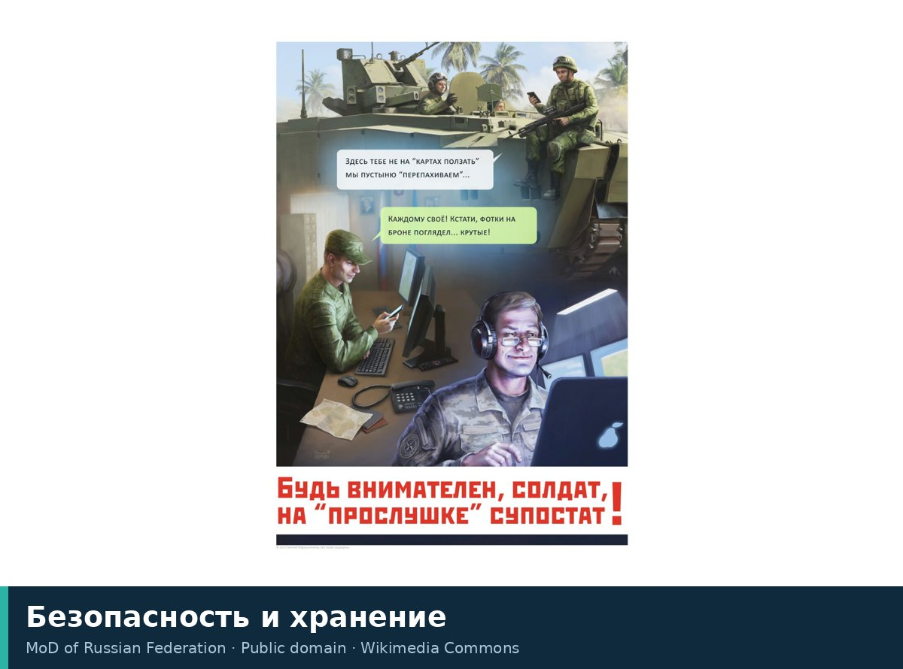

Xavfsizlik va saqlash
Mutaxassisliklar va jarayonlar
Срок годности, упаковка, загрязнители и аллергены — спокойно и с цифрами.

| Nima haqida | Срок годности, упаковка, загрязнители и аллергены — спокойно и с цифрами. |
| Soha | Пищевая безопасность и технологии хранения |
| Shakllanishi | Развитие промышленной пищевой безопасности (XX век) |
| Asosiy usullar | HACCP, физико-химический анализ, метаанализ, биоразлагаемые покрытия |
| Jurnallar | Lancet, BMJ, PLoS Medicine |
Mutaxassisliklar: Xavfsizlik va saqlash
Nimalarni o‘rganadi
Oziq-ovqat xavfsizligi va saqlash — bu oziq-ovqat mahsulotlarining buzilishi, ifloslanishi va sifatini yo‘qotishining oldini olish usullarini o‘rganadigan ilmiy yo‘nalishdir. Asosiy vazifa mahsulot yaxlitligini ta’minlash, uning ozuqaviy qiymatini saqlash va jismoniy, kimyoviy hamda biologik omillarni boshqarish orqali iste’molchi salomatligi uchun xavflarni kamaytirishdan iborat.
Tarix va asosiy kashfiyotlar
Yo‘nalish rivoji hunarmandchilik usullaridan sanoat texnologiyalariga o‘tish bilan bog‘liq. Mikroorganizmlarning oziq-ovqat buzilishidagi rolini tushunish muhim bosqich bo‘ldi. So‘nggi o‘n yilliklarda e’tibor ultra-qayta ishlangan mahsulotlarning metabolizmga ta’siriga qaratildi: 8,8 million kishi ishtirokidagi metatahlil shuni ko‘rsatdiki, har kuni 100 g ultra-qayta ishlangan oziq-ovqat iste’mol qilish yurak-qon tomir kasalliklari xavfini 14% ga oshiradi. Zamonaviy tadqiqotlar faol qadoqlashga, masalan, hosilni himoya qilish uchun xitozan gidrogellari yoki go‘shtdagi bakteriyalar o‘sishini sekinlashtirish uchun timyan efir moyi qo‘shilgan biologik parchalanadigan materiallarga qaratilgan.
Asosiy maktablar va yondashuvlar
Ilm-fanda ikki yondashuv ajratiladi: reaktiv (tayyor mahsulot sifatini nazorat qilish) va preventiv (ishlab chiqarish bosqichida xavflarni boshqarish). Preventiv yondashuv HACCP tamoyillariga asoslanadi. Tadqiqotlar tashqi omillar ta’sirini ham hisobga oladi: masalan, qon izlari va quyosh nuri o‘simlik moyini bir necha soat ichida aldegidlar manbaiga aylantirishi mumkin.
Usullar va vositalar
Usullar fizik-kimyoviy tahlil, mikrobiologik monitoring va qadoqlashni stress-testdan o‘tkazishni o‘z ichiga oladi. Vositalar «aqlli» qoplamalar yaratishdan tortib, organizm to‘qimalarini tiklashga qodir rekombinant oqsillarni ishlab chiqishgacha bo‘lgan doirani qamrab oladi.
Boshqa yo‘nalishlar bilan bog‘liqlik
Yo‘nalish mikrobiologiya, polimerlar kimyosi, nutritsiologiya va materiallar texnologiyasi bilan chambarchas bog‘liq. U mikrob xavfsizligi, qadoqlash migratsiyasi va jarayon ifloslantiruvchilarini o‘rganish bilan integratsiyalashgan.
Qayerda o‘qish va nimalarni o‘qish kerak
Ta’lim «Oziq-ovqat muhandisligi» va «Oziq-ovqat tizimlari xavfsizligi» dasturlari doirasida olib boriladi. Ilmiy ma’lumotlarning shaffofligini ta’minlovchi PRISMA standartlari bo‘yicha rasmiylashtirilgan tizimli sharhlar va metatahlillarni o‘rganish tavsiya etiladi.
Manbalar
- Информационная безопасность — Википедия (ru)
- Иллюстрация: MoD of Russian Federation, Public domain
- The PRISMA statement for reporting systematic reviews and meta-analyses of studies that evaluate healthcare interventions: explanation and elaboration — sharh, BMJ 2009
- Global burden of bacterial antimicrobial resistance in 2019: a systematic analysis — sharh, Lancet 2022
- The PRISMA statement for reporting systematic reviews and meta-analyses of studies that evaluate health care interventions: explanation and elaboration — sharh, PLoS Med 2009